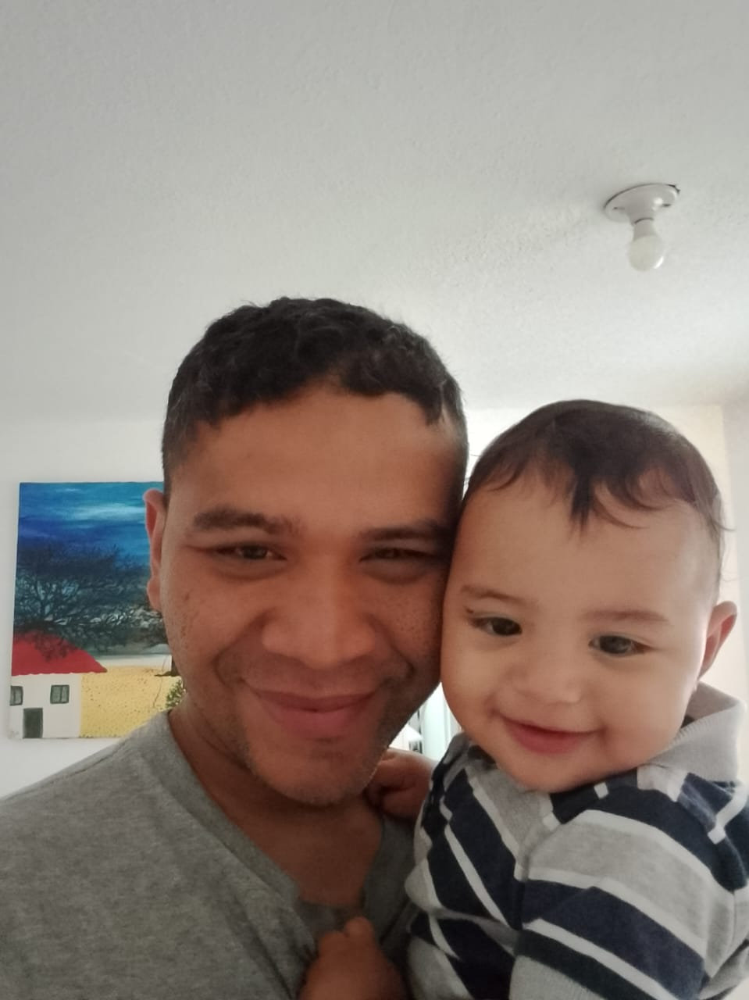

Juventud Radical y Adoradora
Una generación apasionada por el evangelio, lista para vivir y servir en el mundo de hoy.
Líderes de la Generación
Equipo de Liderazgo Juvenil y Adol.

Hno(a). [Nombre del Líder]
Coordinador(a) del Ministerio de Jóvenes
"Te guío a encontrar tu propósito y valor, sembrando la Palabra en esta etapa crucial de tu vida."
Encuentro y Crecimiento
Nuestras Áreas de Enfoque
Culto de Jóvenes
Adoración contemporánea y mensajes relevantes para la vida universitaria y laboral. (Sábados 7:00 PM).
Clase de Adolescentes
Enseñanza bíblica adaptada a sus desafíos, con dinámicas y compañerismo. (Domingos 9:00 AM).
Liderazgo Juvenil
Formación de carácter y mentoría para jóvenes con llamado a servir en la iglesia y la sociedad.
Eventos de Integración
Paseos, campamentos y actividades sociales para fortalecer la amistad cristiana.
¡Forma parte de la Revolución!
Conéctate con otros jóvenes y adolescentes y vive una fe auténtica.
Grupo de WhatsApp